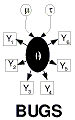

![[new-prior1]](new-prior1.bmp)
 New-prior: using a new prior distribution
(illustrated with normal)
This example uses the 'zeros' trick at the prior level. A single zero Poisson observation, with mean phi = phi(
mu
), say, contributes a term exp(-phi) to the likelihood for
mu
; if this is combined with a 'flat' prior for
mu
then the resulting density function for
mu
will be proportional to exp(-phi).
model {
for (i in 1:7) {
x.rep[i] <- x[i] # replicate data
x[i] ~ dnorm(mu[1], prec[1])
x.rep[i] ~ dnorm(mu[2], prec[2])
}
mu[2] ~ dnorm(0, 1) # 'known' normal prior
# trick using a zero to construct a normal(0, 1) prior for mu[1]
zero <- 0
zero ~ dpois(phi) # likelihood is exp(-phi)
phi <- 0.5 * pow(mu[1], 2) # -log(N(0, 1))
mu[1] ~ dflat() # 'flat' prior
for (k in 1:2) {
prec[k] <- 1 / (sigma[k] * sigma[k])
sigma[k] ~ dunif(0, 10)
}
}
Data:
list(x = c(-1, -0.3, 0.1, 0.2, 0.7, 1.2, 1.7))
Initial values:
list(sigma = c(1, 1), mu = c(0, 0))
The agreement is not wonderful after 10000 iterations ('burn-in' = 5000), but note the high MC error for mu[1]:
node mean sd MC error 2.5% median 97.5% start sample
mu[1] 0.3216 0.4179 0.01316 -0.5135 0.3275 1.163 5001 5000
mu[2] 0.307 0.4083 0.005944 -0.541 0.3134 1.1 5001 5000
sigma[1] 1.15 0.4463 0.009842 0.6216 1.051 2.251 5001 5000
sigma[2] 1.17 0.466 0.01028 0.6254 1.058 2.389 5001 5000
Agreement is OK after 100000 iterations!
node mean sd MC error 2.5% median 97.5% start sample
mu[1] 0.3139 0.4083 0.003015 -0.523 0.3242 1.102 5001 100000
mu[2] 0.3103 0.4077 0.001173 -0.5394 0.3188 1.103 5001 100000
sigma[1] 1.156 0.4536 0.002268 0.6189 1.053 2.286 5001 100000
sigma[2] 1.158 0.4497 0.002164 0.6225 1.056 2.308 5001 100000
Note that the autocorrelation is quite high: